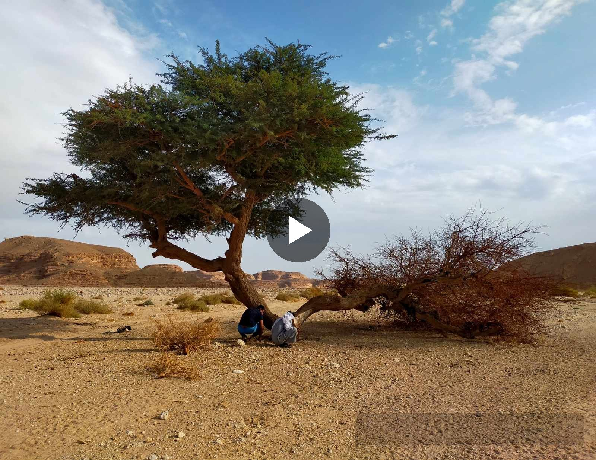
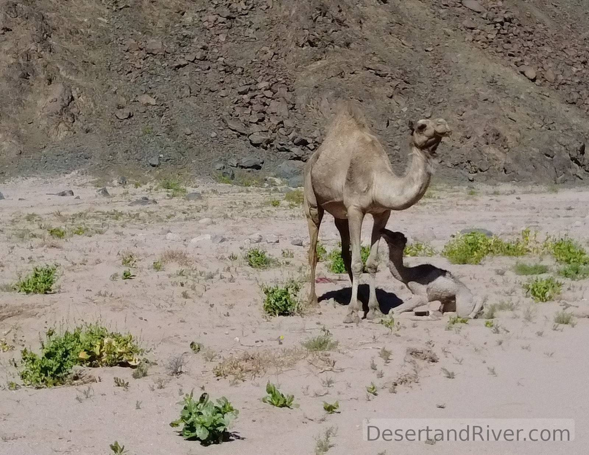

טיולים לדוגמה
נקודת פתיחה, תמיד בהתאמה אישית
המסעות האלה כאן כדי לעזור לכם לדמיין היקף וקצב. כל חוויה מעוצבת סביבכם: הזמן שלכם, הקצב שלכם והתנאים בשטח.

היכרות מעמיקה
חוויה של יום אחד
300 אירו או 21,000 לירות מצריות
מושלם למגלים סקרנים בפעם הראשונה: זמן במדבר, סיפורים וקצב איטי יותר הרחק מדהב.
חוויה של יום אחד נמשכת בדרך כלל מבערך 9:00 עד 17:00.
היום כולל:
- הסעה ברכב 4x4 או רכב רגיל
- רכיבה על גמלים (אופציונלי)
- ארוחת צהריים, נשנושים, מים ותה מסורתי
- מדריך דובר אנגלית
- נהג
- טבח שמכין אוכל טרי במקום
- כל האישורים ודמי הכניסה
דוגמה לחוויה של יום אחד: מתחילים באזור שבו רואים כתובות עתיקות חרוטות בסלעים. משם אפשר להמשיך לגבעת מאובנים סמוכה, ואז להיכנס לקניון להליכה, טיול וטיפוס קל.
בזמן שאתם חוקרים, הטבח מכין ארוחת צהריים טרייה. בדרך חזרה אפשר לעצור בקברים בני יותר מ-5,000 שנה לפני החזרה בסביבות 17:00.
אפשרות אחרת: ביקור בכתובות, במאובנים ובכלים עתיקים, ואז חקירה של קניון קטן יותר. אחר כך אפשר להמשיך להר ראש הדרקון לארוחת צהריים, צילומים וזמן בדיונות.
אחרי הצהריים אפשר לבקר בדיונות סמוכות כדי לגלוש על חול, לשחק בחול או פשוט לנוח, לפני החזרה.
אפשר להוסיף גם חוויות עם גמלים: רכיבה קצרה או מסע ארוך ואיטי יותר דרך הוואדיות.
כל החוויות של יום אחד גמישות וניתנות להתאמה.

להעמיק
מסע עם לינה
600 אירו או 42,000 לירות מצריות
נופים משתנים, מחנות מרוחקים ולילות תחת שמיים זרועי כוכבים, עם מקום להתאמה ולמנוחה.
מסע עם לינה מאפשר לחוות את המדבר עד הסוף, עם לילה אחד או יותר במקום מרוחק. טיול רגיל מתחיל בסביבות 9:00 וחוזר למחרת בסביבות 17:00.
החוויה כוללת:
- הסעה ברכב 4x4
- רכיבה על גמלים (אופציונלי) עם רכב מלווה
- כל ציוד הקמפינג
- כל הארוחות
- נשנושים, מים, תה וקפה
- מדריך דובר אנגלית ונהג בדואי
- טבח שמכין אוכל טרי
- כל האישורים ודמי הכניסה
מסע לדוגמה יכול להתחיל בנסיעה למדבר כדי לחקור כתובות עתיקות ולחפש מאובנים. משם אפשר להמשיך לקניון להליכה וטיפוס, לפני עצירה לארוחת צהריים שהטבח מכין.
אחר הצהריים ממשיכים עמוק יותר למדבר אל מחנה הלילה. אחת האפשרויות היא קניון הזיגזג: מקום צר ומוגן שבו לנים מוקפים באור נרות.
אחרי ארוחת הערב אפשר לנוח ליד האש או לצאת וליהנות משמי הלילה.
הבוקר שלמחרת מתחיל בארוחת בוקר, ואז המסע ממשיך. אפשר לבקר בקברים בני יותר מ-5,000 שנה, לעצור בהר ראש הדרקון ולבלות זמן בדיונות.
כל מסע עם לינה גמיש ומותאם אישית.

למי שרוצה מרחקים
מסע של שלושים יום
9,000 אירו או 630,000 לירות מצריות
מסע איטי דרך ואדיות, נאות מדבר ומסורות נוודים, שמעוצב לפי התנאים והרשות.
זו חוויה סוחפת לגמרי. מטיילים בקצב טבעי, לנים במקומות מרוחקים, ומונחים בידי ידע מקומי ובקצב של האדמה עצמה.
מסעות מדבר רב-יומיים וארוכים חוויות המדבר שלנו לא מוגבלות לכמה ימים: הן יכולות להימשך כמה שתרצו. בין אם זו בריחה קצרה של חמישה ימים ובין אם שקיעה מלאה של עד 30 יום, המסעות האלה גמישים לגמרי. אפשר להעביר את הזמן בהליכה בנופי מדבר עצומים, ברכיבה על גמלים או בחקירה ברכב 4x4, או בשילוב של שלושתם. מה כלול המבנה נשאר דומה בלי קשר לאורך המסע, אבל החוויה מעמיקה עם הזמן. כל יום מתחיל בדרך כלל בסביבות 9:00. משם נוסעים דרך המדבר, לפעמים ברגל, לפעמים בגמל או בג'יפ, לפי השטח וההעדפה שלכם. יום רגיל נראה כך: בוקר: 2–3 שעות דרך צהריים: עצירה למנוחה, תה וארוחת צהריים אחר הצהריים: ממשיכים עוד כמה שעות ערב: מתמקמים במחנה לפני השקיעה, ארוחת ערב משותפת ומנוחה סביב האש הבוקר שלמחרת מתחיל מוקדם, בדרך כלל בסביבות 5–6, עם ארוחת בוקר לפני שיוצאים שוב. קצב טבעי אחרי כמה ימים נכנסים לקצב של חיי המדבר: פשוט, מקרקע ומרגיע לעומק. לאנשים רבים, מסע של 5–6 ימים הוא האיזון המושלם. הוא נותן מספיק זמן להתנתק באמת מהעולם החיצון ולהתחבר לגמרי למדבר. בלי קליטה. בלי הסחות דעת. רק אתם, הנוף והחוויה. נוחות במסעות ארוכים במסעות ארוכים אנחנו מתכננים מסלולים בקפידה כדי להבטיח גישה קבועה למים ולנקודות נוחות. כל 3–4 ימים מגיעים לנווה מדבר שבו אפשר: להתרחץ ולהתרענן להחליף בגדים לנוח לעומק יש גם מקומות, כמו סרביט אל-חאדם, שבהם אפשר להישאר כמה לילות. המקומות האלה מציעים לפעמים נוחות נוספת כמו: מקלחות ושירותים מזרנים אמיתיים בסיס קבוע לחקירת הסביבה להישאר כמה ימים במקום אחד אומר גם פחות אריזה ופריקה, כך שאפשר להירגע לגמרי ולחקור בקצב שלכם. חקירה גמישה בחלק מהימים מעבירים את המחנה. בימים אחרים נשארים במקום אחד ויוצאים לטיולי יום להרים, לוואדיות או למישורי המדבר שמסביב. אזורים כמו ואדי דיסקו או הרי סיני מתאימים לחקירה גמישה כזאת, עם חזרה לאותו מחנה כל ערב. החוויה זמן ארוך במדבר משנה משהו. לשבת סביב האש בלילה. לשאוף את ריח עשן העצים. להתעורר עם השמש ולישון תחת הכוכבים. זו הזדמנות נדירה לצאת מהעולם המודרני ולהתחבר מחדש למשהו אמיתי יותר. ועל מה לא צריך לדאוג? שתסריחו. אחרי כמה ימים כולם מריחים ממילא כמו מדורה.
אף מסע לא קבוע. אלה רק נקודות פתיחה, והחוויה שלכם תעוצב סביבכם.
קבעו שיחה כדי לתכנן את המסע שלכם